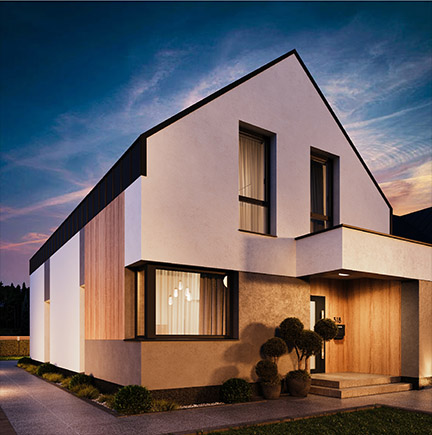
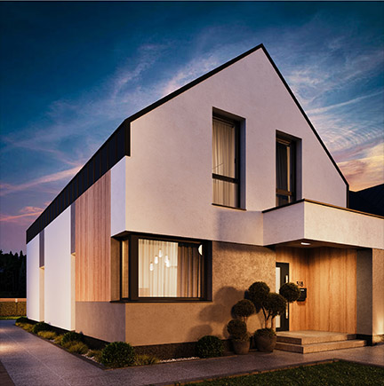

Już dziś możecie nabyć działkę w jednym z najwykwintniejszych miejsc w pobliżu Warszawy. Zielone Łąki to nowe osiedle domów prywatnych w gminie Radzymin, otoczone wiekowymi sosnami. Wszyscy miłośnicy aktywności na świeżym powietrzu mają świetną okazję, aby zimą pobiegać na nartach w pobliskim lesie. Latem zaś wycieczki rowerowe i bliskość Jeziora Zegrzyńskiego to świetne miejsce do pływania, wędkowania i żeglowania. Mieszkania w Zielonych Łąkach to korzystanie ze wszystkich uroków miejskiej infrastruktury i zacisza prywatnego domu. Lokalizacja domów Zielone Łąki sprawia, że w najkrótszym czasie można łatwo dotrzeć do wybranej lokalizacji.

Dzięki dobrze rozbudowanej infrastrukturze na terenie osiedla stworzone zostaną wszelkie warunki do komfortowego życia na przedmieściach. Działki są dostosowane do nowoczesnej komunikacji, wyposażone w oświetlone drogi, chodniki wyłożone kostką brukową i zapewniony jest wygodny dojazd do działek.
Projekty domów dwurodzinnych Zielone Łąki oferują wszystko, co jest niezbędne do wygodnego i przyjemnego życia codziennego: funkcjonalny i prywatny układ pomieszczeń na dwóch piętrach, garaż, taras zewnętrzny, teren prywatny.
Prywatność jest zapewniona dzięki lokalizacji terenów zielonych i osobnym wjazdom na działki. Uprojektowane są także naziemne miejsca parkingowe. Wygląd zewnętrzny domu charakteryzuje się trendem w kierunku białych i szarych kolorów w połączeniu z drewnianą okładziną.
 
Ten klasyczny projekt domu idealnie pasuje do cztero - lub pięcioosobowej rodziny, która ceni sobie wygodę i funkcjonalność. Tworząc go, architekci zastosowali najlepsze rozwiązania w dziedzinie projektowania niskich domów prywatnych.
Na parterze znajdują się pokoje dzienne. Starannie przemyślane przeszklenia pozwalają na korzystanie z naturalnego światła przez cały dzień. Oryginalna kuchnia jest tylko częściowo oddzielona od jadalni, a jadalnia organicznie łączy się z salonem. Jasny przedpokój łączy pokoje dzienne z oddzielną sypialnią. Zewnętrzny taras jest idealnym miejscem na pikniki i odpoczynek latem. W połączonym pomieszczeniu znajduje się również konstrukcja schodów, pod którą wygodnie ukryta jest łazienka z toaletą.
Na pierwszym piętrze znajdują się trzy wygodne sypialnie, pralnia domowa i dwie łazienki, wspólna i prywatna znajdująca się w jednej z sypialni. Pokoje na piętrze pozwalają właścicielom rozdzielić funkcje pomieszczeń według własnego uznania. Część gospodarcza obejmuje duży garaż i pomieszczenie z kotłownią. Blok garażowy połączony jest z częścią mieszkalną projektu przez korytarz, co stanowi szczególną zaletę w chłodnych porach roku. Domy bliźniacze Zielone Łąki oferują przestrzeń z pięcioma pokojami, trzema łazienkami i działką.